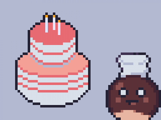

æ ma' mæ Kylling i
-----------------------------------------
æ Kyllingesatayæ Kylinge quesadillas
æ bavt Kylling mæ katøfol o' kryderi
stil billede af Kristaian fra episode 46: tebach om æ scene'
-- anne synnejysk sie' -- løt te æ kålgårdsvisse her --
"Mojne, æ æ bare en synnejysk kastanje, mæ manne, manne manne opskrifter."
"manne av min opsrifter komme fræ min moe elle' fae. æ ha' os et par fræ min bæste moe'."
"Æ æ bæst the av bach' Kache o' anne slows delikatesser. min favoritte' er Goj' raj' o' Rababergrøj."
men do' kænne mæ nok fræ mit show å TV.
- - - - - - - - - - - - - - - - - - - - - - - - - - - - - - - - - - - - - - - - - - - - - - - -
- - - - - - - - - - - - - - - - - - - - - - - - - - - - - - - - - - - - - - - - - - - - - - - -
fra episode 16: Hyben marmelade
-----------------------------------------
æ Kyllingesatay-----------------------------------------
æ Vegetar Bolonese-----------------------------------------
æ Melonsalat- - - - - - - - - - - - - - - - - - - - - - - - - - - - - - - - - - - - - - - - - - - - - - - -
- - - - - - - - - - - - - - - - - - - - - - - - - - - - - - - - - - - - - - - - - - - - - - - -
fra episode 75: Kach te' den do' ælske'
-----------------------------------------
æ Græskar kach-----------------------------------------
æ Rabarbergrøj'- - - - - - - - - - - - - - - - - - - - - - - - - - - - - - - - - - - - - - - - - - - - - - - -

Æ "æt så læt kochboch hold" fra: æ general opsamlning 2017 Jørgensby
fra venstre til højre
Karen Kademomme Lavby, Kristaian Kastanje Tomsen, Kedde 1.3, Harald Johannes Toftlund.